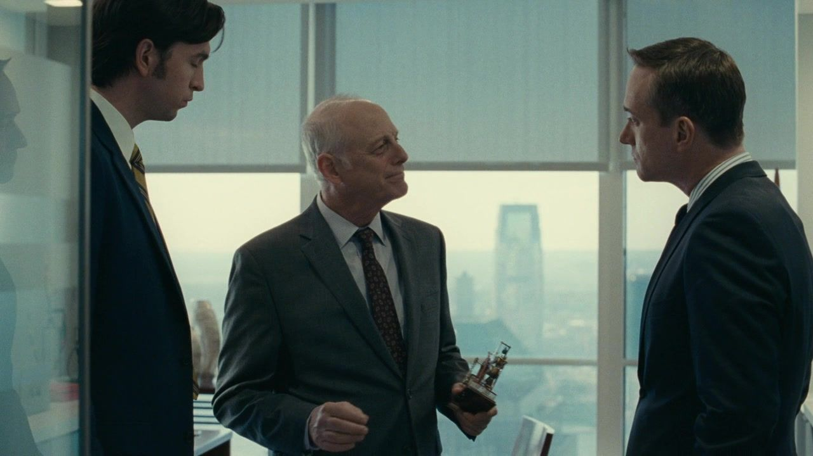
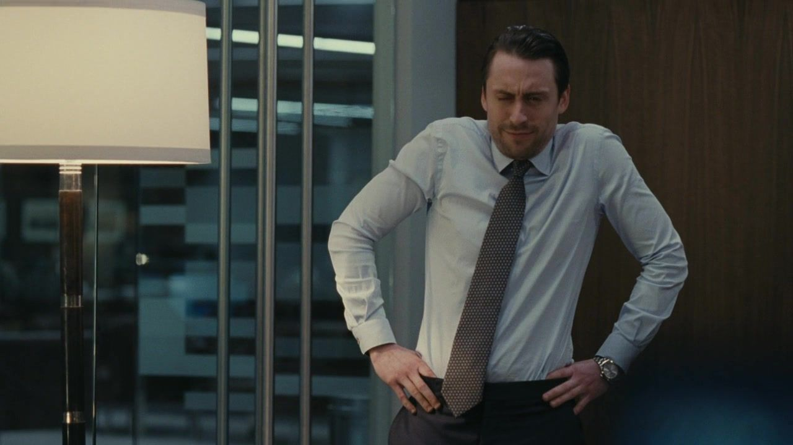
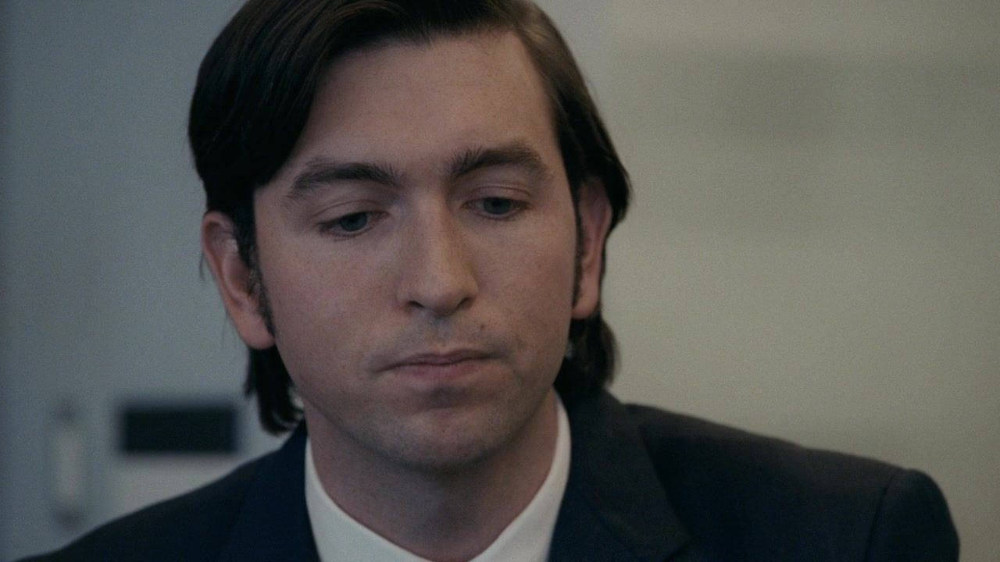
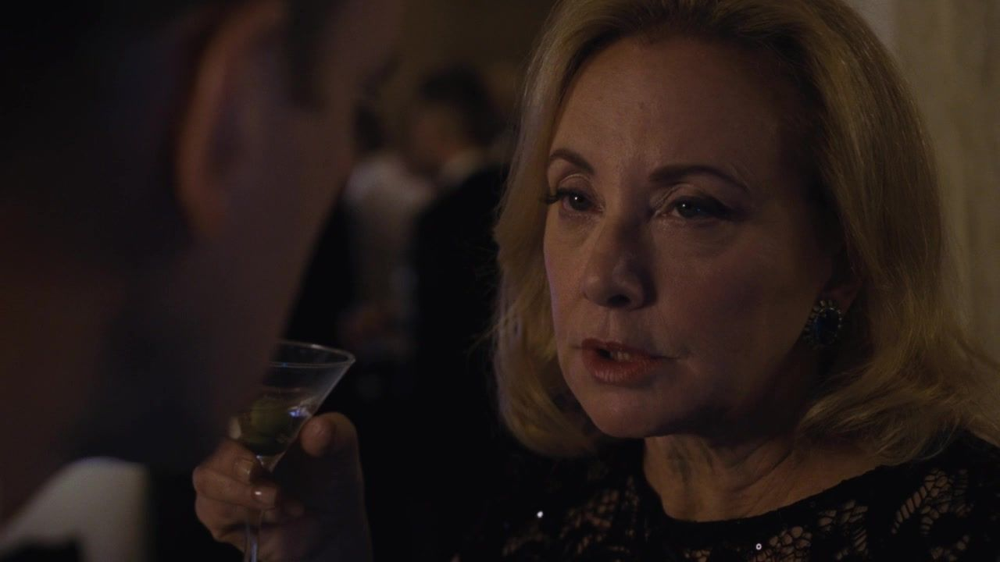
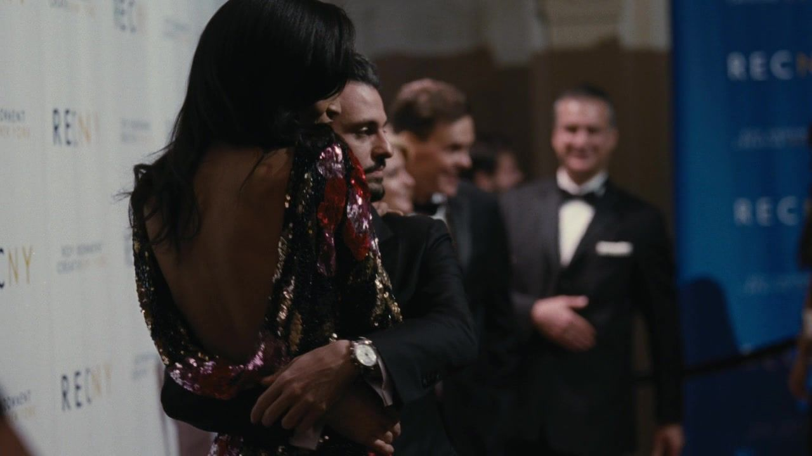
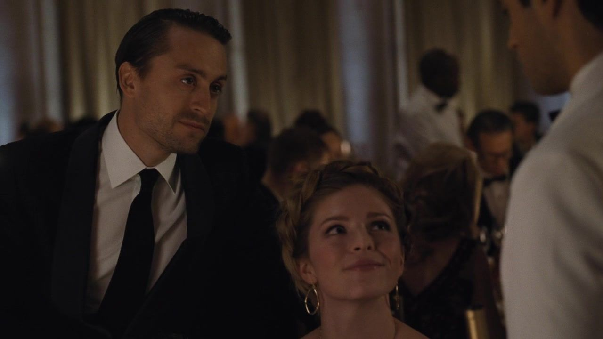
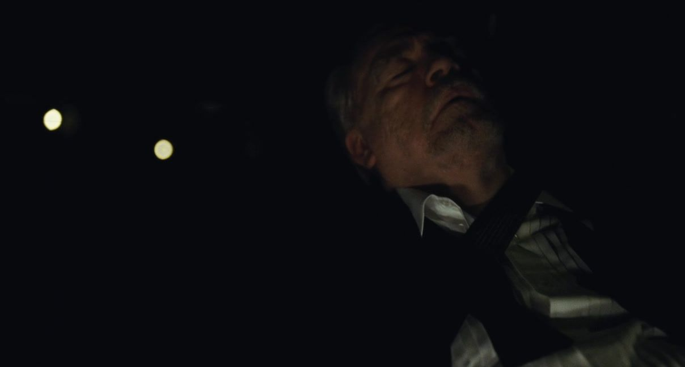

01 / THE STORY
一场慈善晚宴，
九个体面背后的动作。
按本集主线分为三幕；并行发生的谈话与善后，保留其交错关系。
NINE TURNSIACT I / SCENES 01—03
重新坐回去岗位的变化，先让人感到压力。
01办公室 / 洛根回归
他回到桌边，也把儿子重新放回旁边。
剧情事实洛根回到办公室并介入项目，肯德尔对其恢复速度及判断提出担忧，父子继续互相试探。 [1] [2]
这一场为什么重要 个人解读
身体康复没有自动恢复信任。肯德尔的担忧可能是真实的，也无法完全脱离临时权力即将消失的处境。洛根把反对看成不愿自己回来，就能减少对具体意见的讨论。权力争执继续借健康问题表达。
权力的变化经营讨论重新受到父亲在场的支配。
公司 / 罗曼的“帮助”
他得到 COO，又得到一位不想要的老师。

↗弗兰克回到公司，与罗曼、肯德尔交谈。｜HBO · 本集截图剧情事实弗兰克被请回公司协助和指导罗曼。罗曼对这位旧上司重新出现表现出抗拒。 [1] [2]
这一场为什么重要 个人解读
帮助可以提高能力，也能提醒一个人尚未被完全信任。对罗曼来说，弗兰克的经验像是盖在新职位上的括号：你有名义，但仍要有人看着。父亲不必撤回任命，就能缩小儿子独立使用职位的空间。
权力的变化职位保留，独立性被加上限制。
新部门 / 汤姆的交接
升职的文件里，藏着别人做过的事。

↗汤姆在新职务上的办公室画面。｜HBO · 本集截图剧情事实汤姆接手乐园与邮轮业务，获知邮轮上长期存在被掩盖的严重侵害与潜在命案问题。 [1] [2]
这一场为什么重要 个人解读
他想接的是权力和地位，接到的还有组织记忆。知情本身就改变了处境：此后继续沉默，不再只是不了解过去。把它称作坏消息尚且不够，它让晋升从奖励变成是否愿意为体系继续运转承担代价的考题。
权力的变化掌握历史，意味着无法再假装不知道。
这一幕之后洛根回来、弗兰克复职、汤姆拿到新部门；每一次位置变化都附着别人未必乐意接手的条件。
IIACT II / SCENES 04—06
后台的消息风险沿着知情关系移动。
04私下 / 汤姆向格雷格倾诉
他把秘密叫作病毒，又拉一个人一起感染。

↗格雷格听取汤姆谈及部门问题的同场反应镜头。｜HBO · 本集截图剧情事实汤姆将风险比作传染的病毒，向格雷格透露邮轮问题，格雷格因此成为知情者。 [1] [2]
这一场为什么重要 个人解读
比喻把责任变成了会传播的东西：说出去会牵连人，不说又把人留在危险里。汤姆希望新人提供支持，也把新人带进了自己难以承担的秘密。两人的上下级关系，使这次倾诉无法只是平等分担。
权力的变化秘密扩大了知情范围，也扩大了相互制约。
晚宴 / 杰丽的提醒
他想把问题公开，别人先告诉他代价。

↗杰丽在慈善晚宴上谈及邮轮问题的同场镜头。｜HBO · 本集截图剧情事实汤姆考虑公开处理邮轮问题，杰丽在晚宴上出面劝阻，使他意识到计划已经传到更高层。 [1] [2]
这一场为什么重要 个人解读
杰丽不需要大声威胁，就能让汤姆看见一个职业前途与组织利益相连的世界。揭露问题需要的不只是个人勇气，也需要愿意面对自己会失去什么。她提供的冷静判断，同时帮助公司把严重问题继续留在内部。
权力的变化道德上的想法，撞上职业生存的压力。
并行 / 慈善晚宴后台
宏大的善意，也能败给一块太冷的黄油。

↗慈善晚宴宾客与现场气氛配图；非后台黄油争执的特写。｜HBO · 本集截图剧情事实康纳参与晚宴组织，对黄油等细节大发脾气；罗曼也以地位优势让服务人员难堪。 [1] [2]
这一场为什么重要 个人解读
慈善活动把关怀做成公开展示，后台的人却仍可能遭到轻慢。康纳在小事上执着，不只是笑料：一个缺乏公认职责的人，可以靠掌控细节暂时获得分量。问题在于，受他控制的人并没有同等的选择。
权力的变化体面展示依靠不被平等对待的劳动。
这一幕之后汤姆以为倾诉可以减轻压力，组织却在更快地判断谁必须知道、谁必须闭口。
IIIACT III / SCENES 07—09
公开的体面谁上台，谁定义公司发生了什么。
07演讲安排 / 误读与转告
一段尚未说出的话，先被读成夺权。

↗晚宴中的肯德尔与希芙，同场人物配图。｜HBO · 本集截图剧情事实康纳看过肯德尔演讲稿后，误以为他将宣布洛根退休，向父亲报告。洛根决定由自己上台致辞。 [1] [2]
这一场为什么重要 个人解读
还没有发生的宣布，已经足以改变谁能说话。康纳的转述让模糊担忧获得了方向，而洛根不必等待儿子解释，便能直接拿走话筒。真正的控制，不只是反驳别人说的内容，也包括决定别人有没有机会说出来。
权力的变化对意图的怀疑，先取消了儿子的发言位置。
舞台 / 洛根的公告
他感谢了家人，再宣布权力回到自己手里。
剧情事实洛根上台称赞家人、欢迎汤姆，并公开宣布自己全面回归。肯德尔没有如原计划承担核心致辞。 [1] [2]
这一场为什么重要 个人解读
演讲把家庭赞美与权力复位包装成同一个温暖故事。台上的认可并不妨碍台下的压制；外界听见团结，肯德尔看见自己的空间被公开收回。能够决定公告的版本，便能让一次内部争夺显得像一家人的共同喜讯。
权力的变化公开叙事替父亲完成复位。
散场 / 秘密与疲惫
灯熄了，仍有人负责让表面继续完整。

↗散场后，洛根在车内疲倦休息。｜HBO · 本集截图剧情事实汤姆怀疑格雷格泄露消息，格雷格否认；随后杰丽私下肯定了格雷格的通报。玛西娅则照顾在车中疲倦的洛根。 [1] [2]
这一场为什么重要 个人解读
结尾把两种善后并置：一个处理信息流向，一个照顾公开强硬之后疲惫的身体。洛根的回归不是虚构，但宣布全面回来不等于疲惫已经消失。格雷格也不只是被动承受，他开始寻找组织中另一个可以回应自己的出口。
权力的变化公司维持体面，代价与依赖继续留在后台。
这一幕之后洛根把致辞变成复位公告；场外的疲惫与秘密，继续由其他人处理。